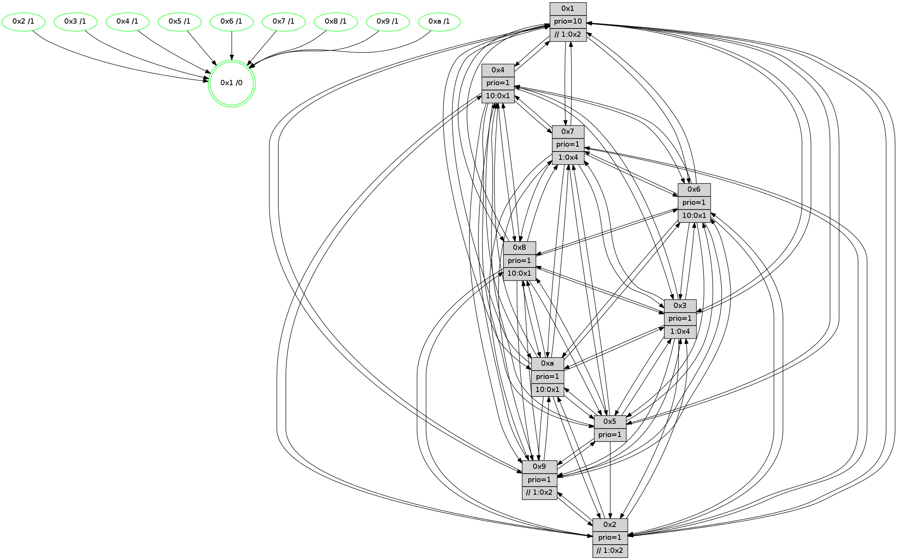

>> << IDX [start] -100 -25 -5 +0 +5 +25 +100 [850.033796072]
 Previous packets
----------------------------------------------------------------------
845.305009 beacon01(faad) #0 coord=01,02,03,04,05,06,07,0a,09,08 cycle=688.0ms assoc
-- color-indic=1 64 41 1f
845.314992 beacon02(faad) #0 coord=01,02,03,04,05,06,07,0a,09,08 cycle=688.0ms assoc 64 d2 2e
845.324992 beacon03(faad) #0 coord=01,02,03,04,05,06,07,0a,09,08 cycle=688.0ms assoc 64 a8 63
845.334992 beacon04(faad) #0 coord=01,02,03,04,05,06,07,0a,09,08 cycle=688.0ms assoc 64 df 89
845.344995 beacon05(faad) #0 coord=01,02,03,04,05,06,07,0a,09,08 cycle=688.0ms assoc 64 a5 c4
845.354993 beacon06(faad) #0 coord=01,02,03,04,05,06,07,0a,09,08 cycle=688.0ms assoc 64 2b 13
845.364994 beacon07(faad) #0 coord=01,02,03,04,05,06,07,0a,09,08 cycle=688.0ms assoc 64 51 5e
845.374997 beacon0a(faad) #0 coord=01,02,03,04,05,06,07,0a,09,08 cycle=688.0ms assoc 64 20 55
845.394999 beacon08(faad) #0 coord=01,02,03,04,05,06,07,0a,09,08 cycle=688.0ms assoc 64 d4 cf
845.405916 [Hello(1): seq=450 sym=4,2,9,5,10,3,8,6,7 sysInfo=coloring-mode-on,ColoringModeRequestCalled stat=4:3,4,5,0/2:0,10,14,9/9:13,15,1,2/5:14,6,7,3/10:11,4,12,9/3:9,3,13,1/8:2,0,13,9/6:8,10,12,8/7:7,4,3,11]
845.408958 [Hello(6): seq=541 sym=2,3,5,4,7,9,8,10,1 sysInfo= stat=2:9,12,12,7/3:3,3,5,8/5:1,7,5,11/4:5,9,15,0/7:12,10,1,3/9:3,9,5,1/8:3,1,3,8/10:2,11,9,8/1:15,0,11,1]
845.416061 [STC(6)->1 #0.99 tree-change,inconsistent-stability,stable,to-color d=1]
845.417559 [STC(2)->1 #0.99 tree-change,inconsistent-stability,stable,to-color d=1]
845.419145 [Hello(3): seq=541 sym=1,7,6,2,4,8,9,10,5 sym= sysInfo= stat=]
845.422199 [Color(4) seq=159 @0:0 prio=1 >10.@1,1.@2,1.@3,1.@6]
845.423871 [STC(8)->1 #0.99 tree-change,inconsistent-stability,stable,to-color d=1]
845.425697 [STC(10)->1 #0.99 tree-change,inconsistent-stability,stable,to-color d=1]
845.429827 [STC(5)->1 #0.99 tree-change,inconsistent-stability,stable,to-color d=1]
845.431142 [Color(2) seq=186 @0:0 prio=1 >>1.@2,1.@3,1.@4]
845.433685 [Color(5) seq=194 @0:0 prio=1]
845.436616 [STC(3)->1 #0.99 tree-change,inconsistent-stability,stable,to-color d=1]
----------------------------------------------------------------------
846.093139 beacon01(faad) #0 coord=01,02,03,04,05,06,07,0a,09,08 cycle=688.0ms assoc
-- color-indic=1 64 fd 1a
846.103122 beacon02(faad) #0 coord=01,02,03,04,05,06,07,0a,09,08 cycle=688.0ms assoc 64 6e 2b
846.113122 beacon03(faad) #0 coord=01,02,03,04,05,06,07,0a,09,08 cycle=688.0ms assoc 64 14 66
846.123121 beacon04(faad) #0 coord=01,02,03,04,05,06,07,0a,09,08 cycle=688.0ms assoc 64 63 8c
846.133122 beacon05(faad) #0 coord=01,02,03,04,05,06,07,0a,09,08 cycle=688.0ms assoc 64 19 c1
846.143122 beacon06(faad) #0 coord=01,02,03,04,05,06,07,0a,09,08 cycle=688.0ms assoc 64 97 16
846.153122 beacon07(faad) #0 coord=01,02,03,04,05,06,07,0a,09,08 cycle=688.0ms assoc 64 ed 5b
846.163127 beacon0a(faad) #0 coord=01,02,03,04,05,06,07,0a,09,08 cycle=688.0ms assoc 64 9c 50
846.183128 beacon08(faad) #0 coord=01,02,03,04,05,06,07,0a,09,08 cycle=688.0ms assoc 64 68 ca
846.195252 [Hello(7): seq=541 sym=2,3,5,6,4,8,9,10,1 sysInfo=hasWarning stat=2:4,9,11,10/3:2,6,7,10/5:11,10,9,14/6:15,3,7,4/4:13,2,3,0/8:8,9,3,1/9:4,3,7,10/10:15,0,9,9/1:9,4,14,0]
846.198609 [Color(1) seq=222 @0:0 prio=10 >>1.@2,1.@3,1.@4]
846.203129 [Hello(9): seq=485 sym=2,5,3,4,7,6,8,10,1 sysInfo=hasWarning stat=2:9,3,15,0/5:9,15,15,2/3:8,5,15,10/4:15,0,15,6/7:12,1,7,7/6:10,7,4,6/8:12,2,9,1/10:6,8,4,0/1:8,9,15,1]
846.206599 [Hello(4): seq=541 sym=5,7,6,2,3,9,8,10,1 sysInfo= stat=5:10,13,3,9/7:4,11,3,4/6:12,6,0,8/2:11,15,14,8/3:8,15,0,6/9:0,9,4,4/8:14,3,3,10/10:7,1,7,7/1:13,6,15,1]
846.209579 [Color(3) seq=182 @0:0 prio=1 >1.@4,1.@6,1.@7]
846.212789 [Color(9) seq=190 @0:0 prio=1 >>1.@2,1.@3,1.@4]
846.214942 [Color(8) seq=197 @0:0 prio=1 >10.@1,1.@2,1.@3,1.@4]
846.224450 [Hello(10): seq=474 sym=6,2,3,8,9,5,7,4,1 sysInfo=hasWarning stat=6:6,11,3,3/2:15,10,14,2/3:7,12,14,7/8:4,8,14,9/9:11,2,4,1/5:15,13,5,11/7:0,0,4,5/4:7,2,10,6/1:13,14,0,1]
846.228246 [Color(10) seq=162 @0:0 prio=1 >10.@1,1.@2,1.@3,1.@4]
----------------------------------------------------------------------
846.881270 beacon01(faad) #0 coord=01,02,03,04,05,06,07,0a,09,08 cycle=688.0ms assoc
-- color-indic=1 64 c9 02
846.891254 beacon02(faad) #0 coord=01,02,03,04,05,06,07,0a,09,08 cycle=688.0ms assoc 64 5a 33
846.901252 beacon03(faad) #0 coord=01,02,03,04,05,06,07,0a,09,08 cycle=688.0ms assoc 64 20 7e
846.911253 beacon04(faad) #0 coord=01,02,03,04,05,06,07,0a,09,08 cycle=688.0ms assoc 64 57 94
846.921252 beacon05(faad) #0 coord=01,02,03,04,05,06,07,0a,09,08 cycle=688.0ms assoc 64 2d d9
846.931252 beacon06(faad) #0 coord=01,02,03,04,05,06,07,0a,09,08 cycle=688.0ms assoc 64 a3 0e
846.941255 beacon07(faad) #0 coord=01,02,03,04,05,06,07,0a,09,08 cycle=688.0ms assoc 64 d9 43
846.951258 beacon0a(faad) #0 coord=01,02,03,04,05,06,07,0a,09,08 cycle=688.0ms assoc 64 a8 48
846.971258 beacon08(faad) #0 coord=01,02,03,04,05,06,07,0a,09,08 cycle=688.0ms assoc 64 5c d2
846.982807 [Hello(6): seq=542 sym=2,3,5,4,7,9,8,10,1 sysInfo= stat=2:9,13,13,7/3:4,4,6,8/5:1,8,6,11/4:6,10,15,0/7:13,10,1,3/9:4,10,5,1/8:3,2,4,8/10:3,12,10,8/1:0,0,11,1]
846.985752 [Color(4) seq=160 @0:0 prio=1 >10.@1,1.@2,1.@3,1.@6]
846.988248 [Hello(2): seq=538 sym=4,7,6,3,9,8,10,1 sysInfo=hasWarning stat=4:15,11,13,4/7:12,5,6,7/6:10,5,0,6/3:2,14,14,4/9:6,0,0,1/8:7,1,13,7/10:2,7,15,7/1:6,2,11,1]
846.991902 [Hello(5): seq=542 sym=7,6,4,3,1,9,8,10,2 sysInfo=hasWarning stat=7:10,6,5,6/6:14,2,3,8/4:6,1,7,5/3:6,7,13,8/1:8,5,15,1/9:1,1,2,1/8:5,13,14,7/10:6,4,11,2/2:11,5,4,0]
846.994916 [Hello(3): seq=542 sym=1,7,6,2,4,8,9,10,5 sysInfo= stat=1:11,2,4,0/7:4,8,12,5/6:5,5,1,0/2:14,7,15,8/4:10,1,8,5/8:3,13,11,5/9:8,9,1,8/10:0,15,15,7/5:5,3,12,9]
846.997945 [Hello(1): seq=451 sym=4,2,9,5,10,3,8,6,7 sysInfo=coloring-mode-on,ColoringModeRequestCalled stat=4:4,5,5,0/2:1,11,15,9/9:14,0,1,2/5:14,7,8,3/10:12,5,13,9/3:10,4,14,1/8:2,1,14,9/6:9,11,13,8/7:8,4,3,11]
847.000795 [Color(2) seq=187 @0:0 prio=1 >>1.@2,1.@3,1.@4]
847.005858 [Color(5) seq=195 @0:0 prio=1]
----------------------------------------------------------------------
847.669402 beacon01(faad) #0 coord=01,02,03,04,05,06,07,0a,09,08 cycle=688.0ms assoc
-- color-indic=1 64 75 07
847.679384 beacon02(faad) #0 coord=01,02,03,04,05,06,07,0a,09,08 cycle=688.0ms assoc 64 e6 36
847.689384 beacon03(faad) #0 coord=01,02,03,04,05,06,07,0a,09,08 cycle=688.0ms assoc 64 9c 7b
847.699385 beacon04(faad) #0 coord=01,02,03,04,05,06,07,0a,09,08 cycle=688.0ms assoc 64 eb 91
847.709385 beacon05(faad) #0 coord=01,02,03,04,05,06,07,0a,09,08 cycle=688.0ms assoc 64 91 dc
847.719385 beacon06(faad) #0 coord=01,02,03,04,05,06,07,0a,09,08 cycle=688.0ms assoc 64 1f 0b
847.729386 beacon07(faad) #0 coord=01,02,03,04,05,06,07,0a,09,08 cycle=688.0ms assoc 64 65 46
847.739392 beacon0a(faad) #0 coord=01,02,03,04,05,06,07,0a,09,08 cycle=688.0ms assoc 64 14 4d
847.759390 beacon08(faad) #0 coord=01,02,03,04,05,06,07,0a,09,08 cycle=688.0ms assoc 64 e0 d7
847.772206 [Hello(4): seq=542 sym=5,7,6,2,3,9,8,10,1 sysInfo= stat=5:11,14,3,9/7:4,11,3,4/6:13,6,0,8/2:12,0,14,8/3:9,0,0,6/9:0,10,4,4/8:14,4,3,10/10:8,2,7,7/1:14,6,15,1]
847.774937 [Hello(8): seq=486 sym=5,2,3,4,7,6,9,10,1 sysInfo=hasWarning stat=5:14,0,6,10/2:10,10,14,2/3:11,11,3,10/4:15,15,0,6/7:0,11,5,9/6:13,12,14,8/9:10,3,2,0/10:9,11,3,0/1:1,0,12,0]
847.777411 [Hello(7): seq=542 sym=2,3,5,6,4,8,9,10,1 sysInfo=hasWarning stat=2:5,10,11,10/3:3,7,7,10/5:12,11,9,14/6:0,4,7,4/4:14,3,3,0/8:8,10,3,1/9:5,4,7,10/10:0,1,9,9/1:10,5,14,0]
847.780496 [Color(6) seq=185 @0:0 prio=1 >10.@1,1.@2,1.@3,1.@4]
847.783840 [Hello(10): seq=475 sym=6,2,3,8,9,5,7,4,1 sysInfo=hasWarning stat=6:7,11,3,3/2:0,11,14,2/3:8,12,14,7/8:4,8,14,9/9:11,2,4,1/5:0,14,5,11/7:1,0,4,5/4:7,3,10,6/1:14,14,0,1]
847.788000 [Color(3) seq=183 @0:0 prio=1 >1.@4,1.@6,1.@7]
847.791005 [Hello(9): seq=486 sym=2,5,3,4,7,6,8,10,1 sysInfo=hasWarning stat=2:10,4,15,0/5:10,0,15,2/3:9,5,15,10/4:15,1,15,6/7:13,1,7,7/6:11,7,4,6/8:12,3,9,1/10:7,9,4,0/1:9,9,15,1]
847.794793 [Color(9) seq=191 @0:0 prio=1 >>1.@2,1.@3,1.@4]
847.800182 [Color(8) seq=198 @0:0 prio=1 >10.@1,1.@2,1.@3,1.@4]
847.803051 [Color(1) seq=223 @0:0 prio=10 >>1.@2,1.@3,1.@4]
847.804668 [Color(10) seq=163 @0:0 prio=1 >10.@1,1.@2,1.@3,1.@4]
----------------------------------------------------------------------
848.457533 beacon01(faad) #0 coord=01,02,03,04,05,06,07,0a,09,08 cycle=688.0ms assoc
-- color-indic=1 64 b1 09
848.467516 beacon02(faad) #0 coord=01,02,03,04,05,06,07,0a,09,08 cycle=688.0ms assoc 64 22 38
848.477516 beacon03(faad) #0 coord=01,02,03,04,05,06,07,0a,09,08 cycle=688.0ms assoc 64 58 75
848.487516 beacon04(faad) #0 coord=01,02,03,04,05,06,07,0a,09,08 cycle=688.0ms assoc 64 2f 9f
848.497515 beacon05(faad) #0 coord=01,02,03,04,05,06,07,0a,09,08 cycle=688.0ms assoc 64 55 d2
848.507516 beacon06(faad) #0 coord=01,02,03,04,05,06,07,0a,09,08 cycle=688.0ms assoc 64 db 05
848.517517 beacon07(faad) #0 coord=01,02,03,04,05,06,07,0a,09,08 cycle=688.0ms assoc 64 a1 48
848.527524 beacon0a(faad) #0 coord=01,02,03,04,05,06,07,0a,09,08 cycle=688.0ms assoc 64 d0 43
848.547523 beacon08(faad) #0 coord=01,02,03,04,05,06,07,0a,09,08 cycle=688.0ms assoc 64 24 d9
848.559704 [Hello(6): seq=543 sym=2,3,5,4,7,9,8,10,1 sysInfo= stat=2:10,14,13,7/3:5,5,6,8/5:2,9,6,11/4:7,11,15,0/7:13,10,1,3/9:5,11,5,1/8:3,3,4,8/10:4,13,10,8/1:1,1,11,1]
848.562982 [Hello(2): seq=539 sym=4,7,6,3,9,8,10,1 sysInfo=hasWarning stat=4:0,12,13,4/7:13,5,6,7/6:11,6,0,6/3:2,15,14,4/9:7,1,0,1/8:8,2,13,7/10:3,8,15,7/1:6,3,11,1]
848.566221 [Hello(5): seq=543 sym=7,6,4,3,1,9,8,10,2 sysInfo=hasWarning stat=7:11,6,5,6/6:15,3,3,8/4:7,2,7,5/3:6,8,13,8/1:8,6,15,1/9:2,2,2,1/8:6,14,14,7/10:7,5,11,2/2:11,5,4,0]
848.569323 [Color(2) seq=188 @0:0 prio=1 >>1.@2,1.@3,1.@4]
848.572070 [STC(1) #0.100 tree-change,inconsistent-stability,stable,to-color d=0]
848.574163 [Color(4) seq=161 @0:0 prio=1 >10.@1,1.@2,1.@3,1.@6]
848.577532 [Hello(3): seq=543 sym=1,7,6,2,4,8,9,10,5 sysInfo= stat=1:12,3,4,0/7:4,8,12,5/6:5,5,1,0/2:14,8,15,8/4:11,1,8,5/8:3,14,11,5/9:9,10,1,8/10:0,0,15,7/5:5,4,12,9]
848.584041 [Color(5) seq=196 @0:0 prio=1]
----------------------------------------------------------------------
849.245665 beacon01(faad) #0 coord=01,02,03,04,05,06,07,0a,09,08 cycle=688.0ms assoc
-- color-indic=1 64 0d 0c
849.255648 beacon02(faad) #0 coord=01,02,03,04,05,06,07,0a,09,08 cycle=688.0ms assoc 64 9e 3d
849.265649 beacon03(faad) #0 coord=01,02,03,04,05,06,07,0a,09,08 cycle=688.0ms assoc 64 e4 70
849.275648 beacon04(faad) #0 coord=01,02,03,04,05,06,07,0a,09,08 cycle=688.0ms assoc 64 93 9a
849.285648 beacon05(faad) #0 coord=01,02,03,04,05,06,07,0a,09,08 cycle=688.0ms assoc 64 e9 d7
849.295648 beacon06(faad) #0 coord=01,02,03,04,05,06,07,0a,09,08 cycle=688.0ms assoc 64 67 00
849.305649 beacon07(faad) #0 coord=01,02,03,04,05,06,07,0a,09,08 cycle=688.0ms assoc 64 1d 4d
849.315652 beacon0a(faad) #0 coord=01,02,03,04,05,06,07,0a,09,08 cycle=688.0ms assoc 64 6c 46
849.335654 beacon08(faad) #0 coord=01,02,03,04,05,06,07,0a,09,08 cycle=688.0ms assoc 64 98 dc
849.347825 [Hello(4): seq=543 sym=5,7,6,2,3,9,8,10,1 sysInfo= stat=5:11,15,3,9/7:5,11,3,4/6:14,7,0,8/2:12,0,14,8/3:10,1,0,6/9:1,11,4,4/8:15,5,3,10/10:9,3,7,7/1:14,7,15,1]
849.351193 [Color(3) seq=184 @0:0 prio=1 >1.@4,1.@6,1.@7]
849.354651 [STC(8)->1 #0.100 tree-change,inconsistent-stability,stable,to-color d=1]
849.356314 [Hello(9): seq=487 sym=2,5,3,4,7,6,8,10,1 sysInfo=hasWarning stat=2:11,5,15,0/5:11,1,15,2/3:10,5,15,10/4:0,2,15,6/7:13,1,7,7/6:12,7,4,6/8:12,4,9,1/10:7,10,4,0/1:9,10,0,1]
849.359405 [Hello(10): seq=476 sym=6,2,3,8,9,5,7,4,1 sysInfo=hasWarning stat=6:8,11,3,3/2:1,12,14,2/3:9,12,14,7/8:4,8,14,9/9:11,2,4,1/5:1,15,5,11/7:1,0,4,5/4:8,4,10,6/1:14,14,1,1]
849.361993 [Color(8) seq=199 @0:0 prio=1 >10.@1,1.@2,1.@3,1.@4]
849.363949 [Hello(7): seq=543 sym=2,3,5,6,4,8,9,10,1 sysInfo=hasWarning stat=2:6,11,11,10/3:4,8,7,10/5:13,12,9,14/6:1,5,7,4/4:14,4,3,0/8:8,11,3,1/9:6,5,7,10/10:1,2,9,9/1:10,6,15,0]
849.367101 [STC(9)->1 #0.100 tree-change,inconsistent-stability,stable,to-color d=1]
849.368680 [STC(7)->1 #0.100 tree-change,inconsistent-stability,stable,to-color d=1]
849.370982 [Color(9) seq=192 @0:0 prio=1 >>1.@2,1.@3,1.@4]
849.372756 [STC(10)->1 #0.100 tree-change,inconsistent-stability,stable,to-color d=1]
849.374430 [STC(2)->1 #0.100 tree-change,inconsistent-stability,stable,to-color d=1]
849.375782 [STC(6)->1 #0.100 tree-change,inconsistent-stability,stable,to-color d=1]
849.377418 [Color(6) seq=186 @0:0 prio=1 >10.@1,1.@2,1.@3,1.@4]
849.381604 [TreeStatus(7)-.->1 #0.100 tree-change,inconsistent-stability,stable child=1]
849.384917 [Color(10) seq=164 @0:0 prio=1 >10.@1,1.@2,1.@3,1.@4]
849.387700 [Color(1) seq=224 @0:0 prio=10 >>1.@2,1.@3,1.@4]